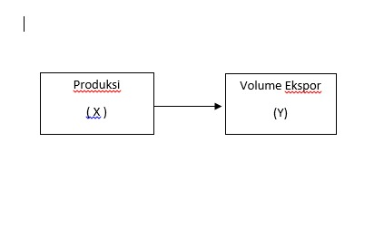
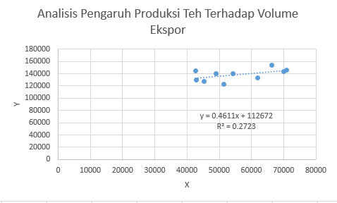

library(tidyverse)
library(readxl)
library(WDI) # tambahkan library lain jika diperlukanAnalisis Pengaruh Produksi Teh Terhadap Volume Ekspor
Metode Penelitian Politeknik APP Jakarta
This just a showcase of what Quarto docs can produce. I use this part for my students.

1 Pendahuluan
1.1 Latar belakang
Perdagangan internasional merupakan perdagangan antar lalu lintas negara yang mencakup ekspor dan impor.Negara-negara yang memiliki sumber daya alam yang berlimpah akan mengekspor sumber daya tersebut ke negara lain. Sumber daya yang seringkali diekspor merupakan dari komoditas pertanian dan pertambangan (Tambunan, 2004). Sub sektor perkebunan masih menjadi unggulan untuk sektor pertanian di Indonesia, salah satunya adalah komoditi teh.
Teh merupakan salah satu komoditi hasil perkebunan yang mempunyai peran yang cukup penting dalam kegiatan perekonomian di Indonesia. Teh sebagai salah satu komoditas yang bertahan hingga saat ini mampu memberikan kontribusi yang besar bagi perekonomian Indonesia melalui devisa yang dihasilkan. Dalam hal produksi, Jawa Barat merupakan penghasil teh terbesar di Indonesia. Perkebunan teh juga menjadi sektor usaha unggulan yang mampu menyerap tenaga kerja dalam jumlah yang besar. Sebanyak 61 % produk teh Indonesia di ekspor untuk memenuhi kebutuhan pasar luar negeri (BPS, 2010). Sementara sisanya berperan sebagai bahan baku bagi industri dan konsumsi dalam negeri. Indonesia merupakan salah satu negara produsen teh di dunia dan Negara pengekspor teh kelima terbesar di dunia setelah Sri Lanka, Kenya, China dan India.
Ekspor dapat diartikan sebagai pengiriman dan penjualan barang-barang dari dalam negeri ke luar negeri. ekspor adalah suatu kegiatan ekonomi menjual produk dalam negeri ke pasar di luar negeri. Keuntungan melakukan ekspor adalah dapat memperluas pasar, menambah devisa negara, memperluas lapangan kerja. Secara fisik ekspor diartikan sebagai pengiriman dan penjualan barang- barang buatan dalam negeri ke negara-negara lain. Pengiriman ini akan menimbulkan aliran pengeluaran yang masuk ke sektor perusahaan. Dengan demikian, pengeluaran agregat akan meningkat sebagai akibat kegiatan mengekspor barang dan jasa, pada akhirnya keadaan ini akan menyebabkan peningkatan dalam pendapatan nasional. Yang dimaksud dengan ekspor adalah kegiatan mengeluarkan barang dari daerah Pabean.
1.2 Ruang lingkup
Pembatasan masalah ini dilakukan agar penelitian dapat fokus pada area ruang lingkup bukan penyelidikan menyeluruh. Penelitian ini lebih berfokus pada menghindari hasil yang tidak diinginkan dan di luar topik. Berdasarkan identifikasi masalah, penelitian membatasi masalah pengaruh produksi teh terhadap volume ekspor 2011 sampai 2021.
1.3 Rumusan masalah
Berdasarkan latar belakang yang telah tertera masalah dirumuskan menjadi:
1. Bagaimana pengaruh produksi terhadap volume ekspor teh di Indonesia?
2. Apa keterkaitan produksi teh terhadap volume ekspor di Indonesia?
1.4 Tujuan dan manfaat penelitian
Tujuan dari penelitian ini berdasarkan perumusan masalah yang telah tercantum adalah:
1. Untuk menganalisis pengaruh produksi terhadap volume ekspor teh di Indonesia.
2. Untuk mengetahui keterkaitan produksi teh terhadap volume ekspor di Indonesia.
Manfaat yang diharapkan dari penelitian atas pengaruh produksi the terhadap volume ekspor adalah:
1. Menjadi tambahan wawasan dan informasi mengenai dampak perdagangan internasional khususnya ekspor produksi teh Indonesia bagi para pembaca.
2. Penelitian ini dapat menjadi referensi sebagai pertimbangan untuk penelitian selanjutnya.
1.5 Package
Packages yang digunakan antara lain sebagai berikut:
2 Studi pustaka
2.1 Teori Produksi
Sudarman (2004:121) menyatakan produksi adalah transformasi atau perubahan barang produk atau proses dimana masukan (input) diubah menjadi keluaran (output). Dalam suatu produksi diusahakan untuk mencapai efisiensi produksi, yaitu menghasilkan barang dan jasa dengan biaya yang paling rendah untuk mendapatkan hasil yang optimal. Joesron et al (2012:87) berpendapat bahwa produksi merupakan hasil akhir dari proses ekonomi dengan memanfaatkan masukan atau input guna menghasilkan suatu output. Disimpulkan bahwa produksi adalah proses ekonomi yang dilakukan manusia dalam menghasilkan suatu output berupa barang atau jasa yang dapat dimanfaatkan untuk memenuhi kebutuhan sehari-hari hidup manusia.
2.2 Teori Ekspor
Ekspor merupakan sistem pedagangan yang dilakukan oleh individu atau badahan usaha dan lembaga yang bertujuan untuk melakukan perdagangan (trading) antar negara. Sedangkan menurut Undang-undang Kepabeanan Pasal 1 ayat 14 bahwa pemerintah meningkatkan cadangan devisa dengan mengembangkan arus ekspor. Maka dari itu pemerintah melakukan himbauan agar setiap barang yang ingin keluar Indonesia atau disebut ekspor agar dimudahkan tanpa melakukan pemeriksaan fisik barang terkecuali untuk ekspor barang (Pabean, 2017). Ekspor adalah proses pertukaran barang dari suatu negara ke negara lain yang mendapat izin secara legal untuk melakukan ekspor. Ekspor merupakan bagian penting dalam memberikan neraca pembayaran dari negara (Apridar, 2009 dalam Jamilah, dkk 2016). Dari pandangan tersebut dapat disimpulkan bahwa Ekspor adalah suatu kegiatan mengeluarkan barang dan jasa dari daerah pabean.
2.3 Kerangka Penelitian

3 Metode penelitian
3.1 Data
Jenis dan sumber data yang digunakan dalam penelitian ini adalah data sekunder yang diperoleh dari berbagai sumber. Antara lain yang diperoleh dari Badan Pusat Statistik (BPS), INSW HS CODE, jurnal-jurnal ilmiah, serta literatur-literatur lain yang berkaitan dengan topic penelitian ini. Data yang digunakan dalam penelitian ini adalah data (time series) yang berkurun waktu 11 tahun mulai tahun 2011 hingga tahun 2021. Teknik pengumpulan data meruapakan langkah strategis dalam penelitian karena tujuannya adalah mendapatkan data yang valid.
Penelitian ini menggunakan data excel

3.2 Metode analisis
Metode yang dipilih adalah regresi Square (OLS) dengan 2 variabel independen.Penelitian ini dibuat untuk mencari hubungan antara Produksi dan Ekspor. Spesifikasi yang dilakukan adalah:
\[ y_{t}=\beta_0 + \beta_1 x_t+\mu_t \] di mana \(y_t\) adalah Produksi dan \(x_t\) adalah Volume Ekspor.
4 Pembahasan
4.1 Pembahasan masalah
Teh menjadi salah satu komoditas potensial milik Indonesia. Kualitasnya yang baik tak hanya membuat teh dipasarkan di dalam negeri, tapi juga ke mancanegara. Ekspor teh Indonesia secara dirinci berdasarkan kelompok kode Harmony System (HS) sebagai berikut : Untuk teh, diberi rasa maupun tidak (Kode HS 0902), dan turunanya yaitu ekstrak teh untuk produksi olahan teh, dalam bentuk bubuk (Kode HS 21012020) dengan bm nya 20.00% (PMK 26/PMK.010/2022) dan BK tidak ada pada teh. Berikut adalah tabel produksi teh di Indonesia :
Tabel 1. Produksi Teh
| Tahun | Produksi |
|---|---|
| 2011 | 146,6 ton |
| 2012 | 143,41 ton |
| 2013 | 145,9 ton |
| 2014 | 154,4 ton |
| 2015 | 132,6 ton |
| 2016 | 122,5 ton |
| 2017 | 140,6 ton |
| 2018 | 140,1 ton |
| 2019 | 129,9 ton |
| 2020 | 127,9 ton |
| 2021 | 145,1 ton |
Sumber : Badan Pusat Statistika
Dari tabel diatas dapat dilihat hasil produksi teh di Indonesia cenderung terjadi fluktuatif. Pada tahun 2011 jumlah produksi teh di Indonesia sebesar 146,6 ton tahun berikutnya terjadi penurunan hingga 2013 sebesar 145,9 ton dan mengalami peningkatan terbesar sebesar 154,4 ton dan setelah itu mengalami penurunan hingga 2021 sebesar 145,1 ton. Fluktuatif ini terjadi karena banyak perkebunan teh yang sudah berusia tua sehingga produktivitas berkurang. Faktor lain yang mempengaruhi adalah biaya produksi yang tinggi, sehingga harga jual teh lokal akan lebih mahal dibandingkan dengan produsen teh negara lain. Dan dalam melakukan produksi, tentunya perusahaan dihadapkan dengan berbagai masalah produksi. Masalah utama yakni berkaitan dengan faktor-faktor produksinya. Dalam proses produksi yang bertujuan untuk menghasilkan output harus menggunakan dari berbagai faktor-faktor produksi seperti modal, tenaga kerja dan bahan baku. Faktor-faktor produksi yang mempunyai peranan besar terhadap produksi teh adalah modal, tenaga kerja dan bahan baku. Data produksi ekspor teh (X) yang terdapat dalam penelitian ini merupakan data produksi ekspor total yang dilakukan Indonesia dari tahun 2011-2021. Dan berikut adalah tabel volume ekspor teh di Indonesia :
Tabel 2. Volume Ekspor
| Tahun | Ekspor |
|---|---|
| 2011 | 75,45 ton |
| 2012 | 70,07 ton |
| 2013 | 70,84 ton |
| 2014 | 66,4 ton |
| 2015 | 61,92 ton |
| 2016 | 51,32 ton |
| 2017 | 54,19 ton |
| 2018 | 49,04 ton |
| 2019 | 42,81 ton |
| 2020 | 45,26 ton |
| 2021 | 42,65 ton |
Sumber : Badan Pusat Statistika
Dapat dilihat dari tabel diatas yaitu perkembangan volume ekspor teh Indonesia mengalami penurunan, pada tahun 2011 jumlah volume ekspor teh Indonesia sebesar 75,45 ton dan mengalami penurunan sebesar 42,65 ton pada tahun 2021. Penurunan volume ekspor ini dipengaruhi oleh jumlah produksi yang terus berkurang akibat dari rendahnya tingkat produktivitas perkebunan teh di Indonesia, sehingga banyak produk dari Negara lain yang menguasai pasar internasional. Data volume ekspor teh (Y) yang terdapat dalam penelitian ini merupakan data volume ekspor total yang dilakukan Indonesia dari tahun 2011-2021.
4.2 Analisis masalah
Hasil regresinya adalah bahwa 1 ton produksi dapat menambah tingkat eskpor teh Indonesia sebesar 0.4504 ton.
dat<-read_excel('variabel.xlsx')
reg1<-lm(X~Y,data=dat)
summary(reg1)
Call:
lm(formula = X ~ Y, data = dat)
Residuals:
Min 1Q Median 3Q Max
-13821.9 -4140.8 -589.8 3895.2 12683.0
Coefficients:
Estimate Std. Error t value Pr(>|t|)
(Intercept) 1.132e+05 1.273e+04 8.893 9.42e-06 ***
Y 4.504e-01 2.179e-01 2.067 0.0687 .
---
Signif. codes: 0 '***' 0.001 '**' 0.01 '*' 0.05 '.' 0.1 ' ' 1
Residual standard error: 8336 on 9 degrees of freedom
Multiple R-squared: 0.3219, Adjusted R-squared: 0.2465
F-statistic: 4.271 on 1 and 9 DF, p-value: 0.068735 Kesimpulan
Dari analisis data yang telah dilakukan mengenai pengaruh produksi terhadap volume ekspor teh Indonesia maka dapat ditarik kesimpulan yaitu :
1. Hasil dari regresi disimpulkan bahwa 1 ton produksi dapat menambah tingkat eskpor teh Indonesia sebesar 0.4504 ton. Hal tersebut berarti jumlah produksi teh berpengaruh sebesar 0.4504 terhadap tingkat ekspor teh Indonesia tahun 2011-2021.
2.Terdapat pengaruh yang positif antara volume ekspor terhadap produksi ekspor. Hasil ini menunjukkan bahwa besar atau kecilnya produksi teh mempengaruhi peningkatan volume ekspor teh. 3.Hasil produksi teh di Indonesia dari 2011 sampai 2021 mengalami fluktuasi yang signifikan dan volume ekspor juga mengalami penurunan dari tahun 2011 sampai 2021.
Dari penelitian tersebut, terdapat kekurangan pada data yang digunakan untuk analisis. Kekuranganya yaitu data yang berasal dari Badan Pusat Statistik harus diolah secara manual. Hal tersebut membuat pengolahan data menjadi lebih lama dan sulit.
6 Saran
Pemerintah harus berinovasi untuk meningkatkan produksi teh dalam negri sehingga dapat meningkatkan volume ekspor.
7 Referensi
Mejaya, A. S., Fanani, D., & Mawardi, M. K. (n.d.). PENGARUH PRODUKSI, HARGA INTERNASIONAL, DAN NILAI TUKAR TERHADAP VOLUME EKSPOR.
Indonesia, D. (n.d.). Indonesia Produksi Teh Sebanyak 145,1 Ribu Ton pada 2021. Dataindonesia.id. Retrieved January 19, 2023, from https://dataindonesia.id/sektor-riil/detail/indonesia-produksi-teh-sebanyak-1451-ribu-ton-pada-2021
Indonesia, D. (n.d.). Ekspor Teh Indonesia Cenderung Turun dalam Satu Dekade Terakhir. Dataindonesia.id. Retrieved January 19, 2023, from https://dataindonesia.id/sektor-riil/detail/ekspor-teh-indonesia-cenderung-turun-dalam-satu-dekade-terakhir
Badan Pusat Statistik. (n.d.). Retrieved January 19, 2023, from https://www.bps.go.id/publication/2021/11/30/a39c39e9b09d77c9a282a0b5/statistik-teh-indonesia-2020.html
Official Website INSW. (n.d.). Retrieved January 19, 2023, from https://www.insw.go.id/intr
Damanik, D. A., Harahap, A., & Pailis, E. A. (2016). ANALISIS FAKTOR-FAKTOR YANG MEMPENGARUHI PRODUKSI TEH (Studi Kasus: PTPN IV Bahbutong, Kec. Sidamanik, Kab. Simalungun Sumatera Utara). Jurnal Online Mahasiswa (JOM) Bidang Ilmu Ekonomi, 2(2), Article 2.